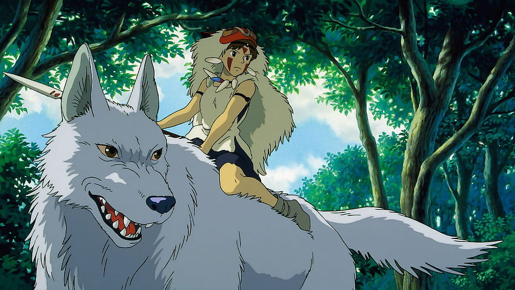

Giappone, periodo Muromachi. Un gigantesco spirito-cinghiale, trasfigurato in un demone a causa del rancore, attacca un villaggio di Emishi[2]. Per salvare la propria gente il giovane principe Ashitaka è costretto ad ucciderlo, ma nello scontro viene ferito al braccio, venendo così infettato dal rancore dello spirito-cinghiale, che si manifesta come una piaga che, a poco a poco, colpirà tutto il suo corpo. Nei resti del Dio-Cinghiale viene trovata una misteriosa palla di ferro: è stato il dolore provocato da quel proiettile a trasformare il Dio-Cinghiale. Consultata la sciamana del villaggio, Ashitaka apprende che il maleficio lo porterà alla morte, perciò lascia per sempre la terra natale e s'incammina verso ovest, luogo di provenienza del demone, alla ricerca di una possibile cura. Durante il viaggio, dopo essersi imbattuto nell'attacco di un villaggio da parte di alcuni samurai, da cui riesce a fuggire, incontra Jiko, un monaco errante che confida ad Ashitaka come un "Dio della Foresta" (Shishigami) che vive ad ovest potrebbe effettivamente curarlo. Partito quindi alla ricerca del Dio, il giovane s'imbatte in due uomini feriti. Questi uomini facevano parte di un convoglio diretto alla Città del Ferro (Tataraba), un centro proto-siderurgico che produce nuove armi da fuoco e di conseguenza estrae enormi quantità di ferro dalla montagna vicina. Mentre Ashitaka attraversa la foresta, popolata di kodama, insieme ai due feriti, lungo la riva di un fiume vede in lontananza San, detta "Mononoke", definita dagli abitanti del posto come "ragazza-lupo", una trovatella cresciuta dalla Dea-Lupa Moro, protettrice del bosco, che prova rancore nei confronti degli umani a causa del loro comportamento invasivo e che per questo motivo attacca le carovane. Giunto alla Città del Ferro, Ashitaka conosce la signora Eboshi, la padrona della città, e da lei apprende che in quel luogo è in corso una lotta tra umani e dei-animali, in quanto gli umani si sono spinti in territori proibiti per estrarre ferro. Proprio in uno scontro fra umani e divinità della foresta ella ha causato la ferita a Nago, il Dio-Cinghiale che ha attaccato il villaggio di Ashitaka, rendendolo folle e consumato dal rancore. Sebbene sconvolto dalle azioni violente nei confronti degli spiriti, Ashitaka scopre anche che la Città del Ferro è un rifugio per tante persone emarginate dalla società come i lebbrosi, che hanno trovato lì una nuova ragione di vita, e così sente di non poter condannare del tutto Eboshi. Ashitaka capisce infine che la gente della città del Ferro vuole avere solo un posto dove poter vivere felice, senza più essere dominati dagli uomini potenti, ma è anche accecata dalla paura degli dei-animali, vedendoli come dei mostri pericolosi che vogliono ucciderli e non come forze della natura che combattono solo per proteggere la foresta che essi stanno distruggendo. Quella stessa notte Mononoke cerca di uccidere Eboshi, irrompendo nelle mura della città grazie all'aiuto dei suoi due fratelli lupi. La ragazza sfida la donna a duello, dopo aver superato gli abitanti che le sbarravano la strada. Tuttavia Ashitaka, dopo aver scoperto che la maledizione gli ha conferito una forza sovrumana, pone fine allo scontro mettendo al tappeto entrambe, avvertendo poi tutti i presenti che un conflitto così sanguinario porterà solo ancora più odio e a dimostrazione di questo la maledizione di Nago sul braccio di Ashitaka si manifesta in un groviglio di serpenti neri, suscitando il panico generale; mentre il giovane sta per portare via Mononoke, viene gravemente ferito da un colpo d'arma da fuoco partito per sbaglio e, dopo essere uscito dalla città con la ragazza sulle spalle, perde i sensi. Mononoke, ripresasi, decide di aiutarlo e lo lascia allo stagno frequentato dallo Shishigami; il Dio della Foresta guarisce Ashitaka dalla ferita, ma non rimuove la maledizione di Nago. Nel frattempo, arriva nella foresta il clan dei cinghiali guidato dalla Dio-Cinghiale Okkoto, il quale, stanco dei soprusi degli umani, ha radunato la sua stirpe ed è intenzionato ad attaccarli in massa. Moro, anche lei infettata da un proiettile degli uomini della Città del Ferro e ormai al limite della sua vita, cerca di dissuaderli perché un attacco frontale causerebbe solo il loro sterminio. Tuttavia Okkoto non cambia idea. Nel frattempo la Città del Ferro viene attaccata dai samurai del Clan Asano, il quale rivendica i diritti sul luogo e chiede una percentuale del ferro come pagamento, ma gli abitanti li respingono grazie alla superiorità delle loro armi da fuoco. Si apprende anche che Jiko, il monaco errante, è in realtà un inviato dell'Imperatore con la missione di trovare il Dio della Foresta e tagliargli la testa: secondo le antiche tradizioni, quest'ultima dà la vita eterna a chiunque la possegga. La signora Eboshi, avendo ottenuto dall'Imperatore, all'inizio della propria carriera, gli archibugieri con cui è riuscita a sconfiggere gli spiriti, accetta di collaborare con Jiko. Durante la convalescenza, Ashitaka si innamora gradualmente di Mononoke, il cui vero nome è San, ma resta altrettanto disgustato da come lei, la sua famiglia, i cinghiali e il resto degli animali vedano nella violenza l'unica soluzione, credendo ingenuamente che uccidere Eboshi e sterminare gli abitanti della Città del Ferro impedirà l'instaurarsi di successivi insediamenti. Pur provando a parlarne con Moro, capisce che anche la vecchia Dea-Lupa ormai è dominata dall'odio e che quindi non lo ascolterà mai. Ashitaka ha così conferma che entrambe le fazioni sono accecate dalla rabbia e dal rifiuto di tentare a comprendersi. Non avendo trovato una cura dal maleficio è condannato a una morte certa; consapevole di come lui, da solo, non possa impedire lo scoppio della guerra, Ashitaka decide di lasciare la foresta. Nell'allontanarsi viene richiamato dai rumori dell'assedio che i samurai del Clan Asano hanno mosso contro la Città del Ferro; si reca quindi vicino alle sue mura e viene a conoscenza della missione di Jiko e della signora Eboshi, che ha portato con sé la maggior parte delle truppe della cittadella che, quasi indifesa, è stata subito presa di mira dall'esercito di Asano. Il ragazzo decide di informare Eboshi dell'attacco, per distoglierla dalla missione e salvare così il Dio della Foresta, San e l'intera città. Giunge al campo dove si sono scontrati gli umani e i cinghiali, e scopre come il risultato sia stato un vero e proprio massacro: molti uomini della città sono morti, mentre i cinghiali sono stati sterminati. Lì apprende che Jiko e la signora sono già sulle tracce del Dio. Okkoto, unico sopravvissuto del suo clan e gravemente ferito, sta cercando di raggiungere il Dio della Foresta, insieme a San e i suoi fratelli lupi, per chiedergli guarigione ma, sopraffatto dal rancore verso gli umani, comincia anche lui a mutarsi in un demone, inglobando la ragazza. Giunti allo stagno del Dio della Foresta, Moro strappa San a Okkoto e la consegna ad Ashitaka, che la immerge nell'acqua dello stagno per eliminare il fluido demoniaco di cui è ricoperta. Lo Spirito della Foresta, a quel punto, appare e termina l'agonia di Okkoto e Moro, dando loro una morte serena. Ma a quel punto arriva Eboshi che, ignorando le implorazioni di Ashitaka, riesce, con un colpo di archibugio, a mozzare la testa del Dio, che Jiko mette al sicuro in un contenitore. Decapitato, il Dio si trasforma in un "Dio della Morte", iniziando a espandersi e prendendo la forma di un gigante liquido, che nella ricerca della sua testa uccide ogni forma di vita che tocca. Con un colpo di scena la testa di Moro, staccatasi dal corpo, riesce con un ultimo impeto di furia a mozzare il braccio destro di Eboshi, ottenendo così la propria vendetta. Dopo aver soccorso la signora, Ashitaka convince San ad aiutarlo a recuperare la testa e a salvare tutti. Il Dio raggiunge la Città del Ferro, sotto assedio, e distrugge tutto ciò che incontra sul suo cammino; i samurai accampati fuori si danno alla fuga e solo una parte dei cittadini riesce a salvarsi, rifugiandosi in mezzo al lago, dove il fluido mortale sembra non poter arrivare. Dopo aver convinto Jiko a restituire la testa, Ashitaka e San la alzano al cielo insieme per renderla al Dio. Il gesto induce l'espansione incontrollata della maledizione di Ashitaka, che infetta anche San, ma fortunatamente il Dio sembra sentire la chiamata dei due e quindi riassimila la propria testa, inglobando anche loro e ritornando se stesso. Giunte le prime luci dell'alba Colui-che-cammina-nella-notte, invece di ritrasformarsi nel Dio-Cervo, si lascia cadere nel lago, generando una potente raffica di vento. Tutto il male che aveva invaso la valle svanisce e nelle zone colpite dalla distruzione ritorna la vita: la città, la foresta e le colline disboscate si ricoprono di vegetazione; i lebbrosi e tutti i feriti della Città del Ferro vengono guariti; anche il maleficio che aveva colpito Ashitaka e Mononoke scompare dai loro corpi. Conclusi gli accadimenti e le guerre, San dichiara di tenere molto ad Ashitaka ma di non poter perdonare gli umani, e che quindi continuerà a vivere nella foresta, insieme ai lupi; Ashitaka le dichiara a sua volta che lui le rimarrà comunque accanto, vivendo nella Città del Ferro e venendola a trovare. La signora Eboshi, pentita per le proprie azioni, afferma di voler costruire una città migliore, dove gli abitanti vivranno rispettando la natura, e di voler ringraziare Ashitaka per averli salvati. Sconfitto ma sopravvissuto, il monaco Jiko conclude ironicamente che "contro gli stupidi non c'è possibilità di vittoria", parafrasando un antico proverbio giapponese, mentre un Kodama compare nella foresta rinata. Spiriti della natura, animali e uomini sono di nuovo riuniti insieme.